調理道具買い物ナビ付
最初のお料理
豚のしょうが焼き
コンビニキャベツ添え
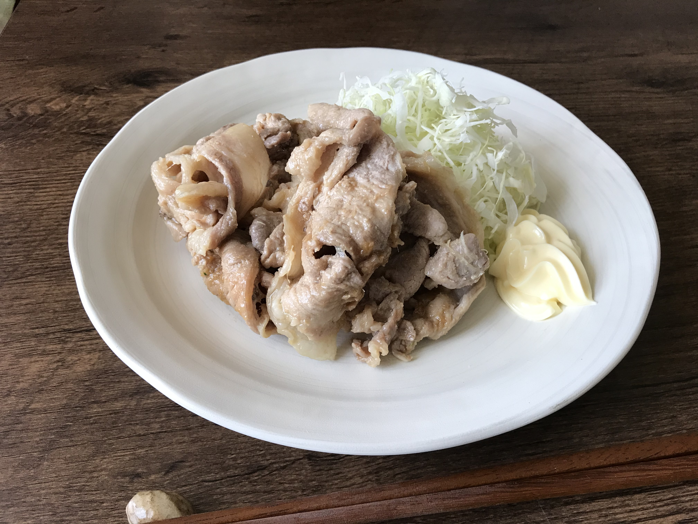
豚のしょうが焼きは4つの調味料 各大さじ1づつでできます。
下のチェックで道具を確かめます。
下のチェックで道具を確かめます。
熱源
フライパン購入前に確認 （ガス専用フライパンはIHには使えません）
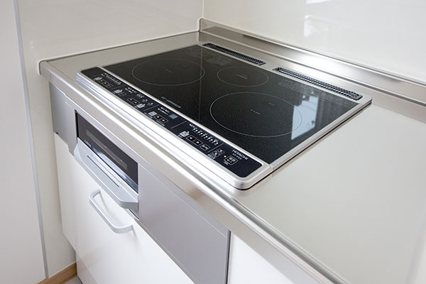
IH
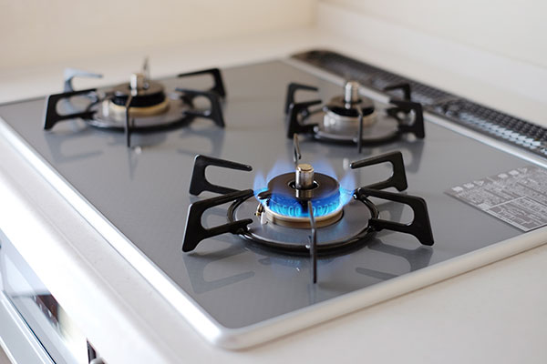
ガス
調理器具
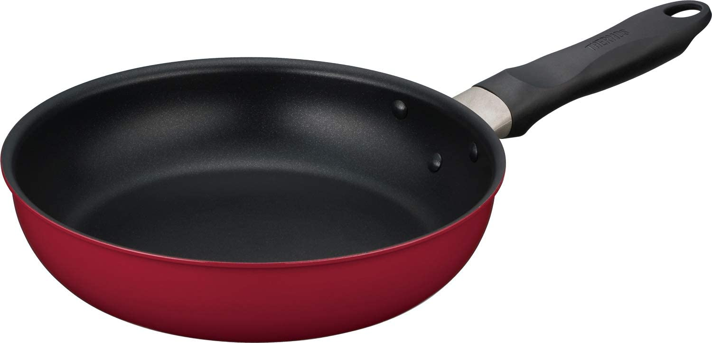
直径24cmのフライパン（テフロン加工等）
調理器具・小物

キッチンばさみ、お皿、キッチンペーパー、箸、菜箸、計量スプーン、スポンジ、洗剤
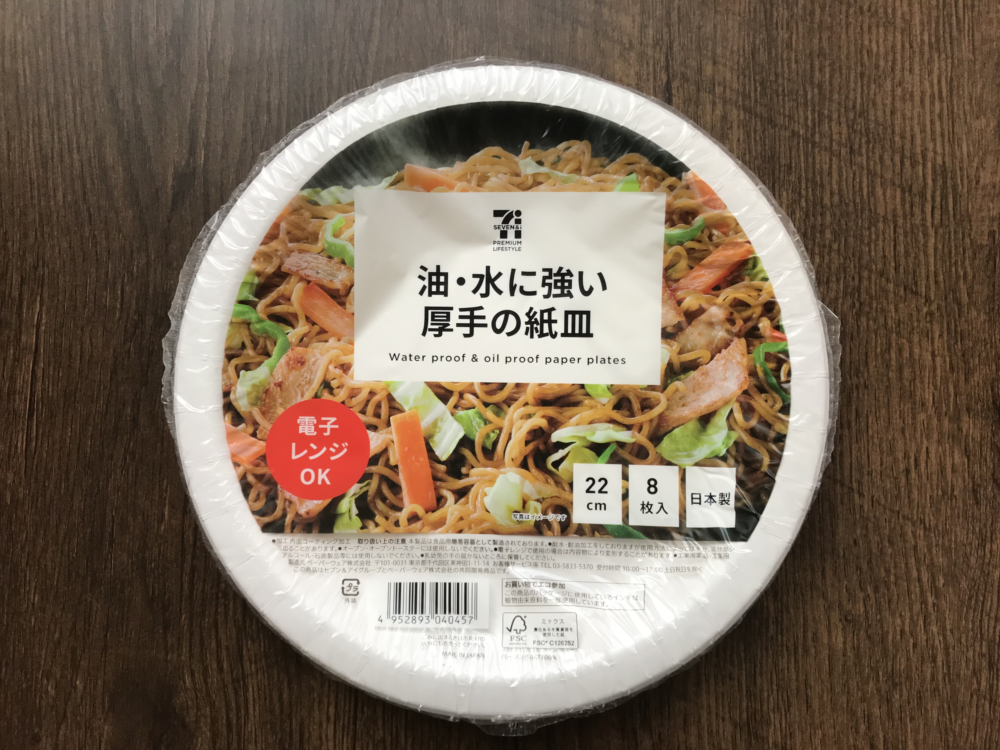
紙皿22cm
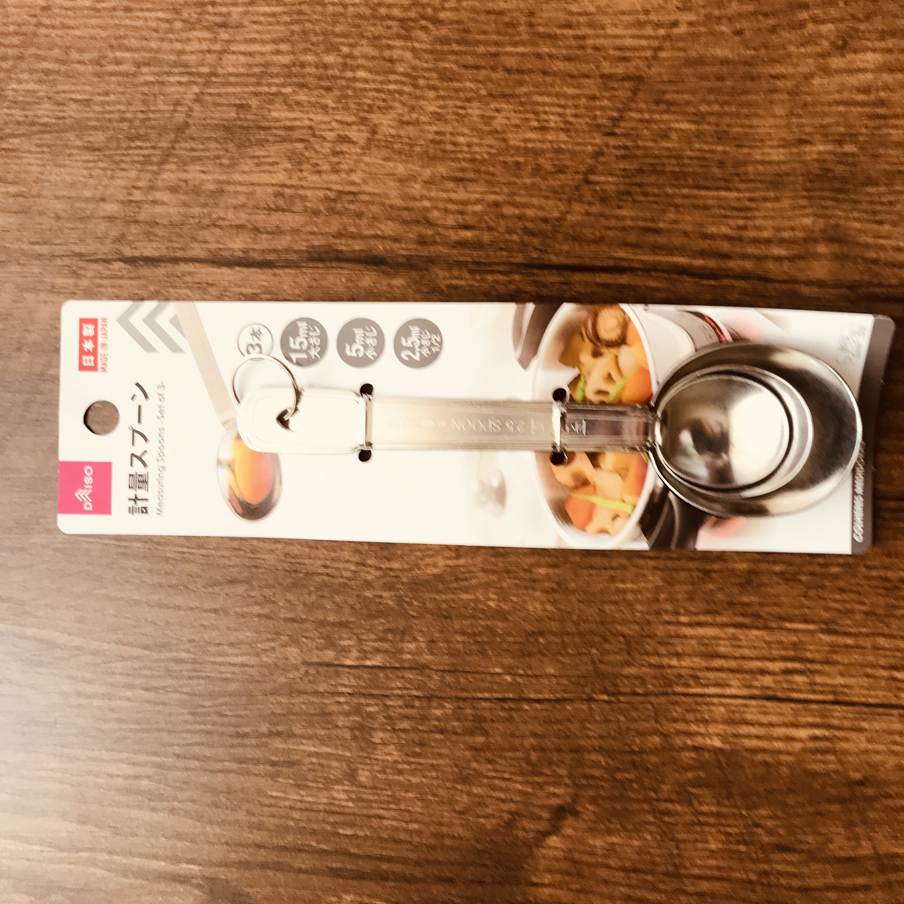
大さじ・小さじ・1/2小さじのセット
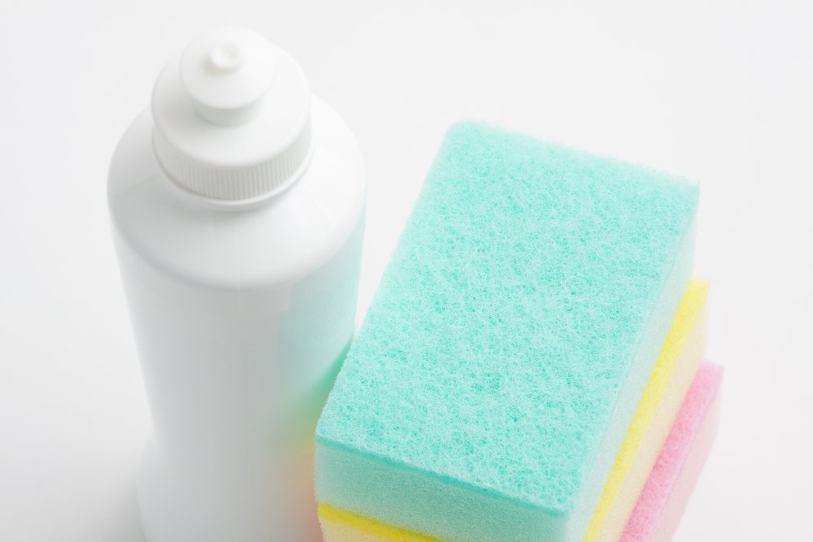
スポンジと洗剤。
洗わなくてもいい紙皿、お皿にラップを張ってお料理を盛るなど、食器洗いの負担をへらします。ふきんもキッチンペーパーで代用、汚れはすぐにふき取ってごみ箱へ捨てます。食事の箸は油はねでやけどするので菜箸も用意します。計量スプーンはスーパーにも100円ショップにもあります。フライパンやハサミなどを洗うためのスポンジと洗剤を用意します。
調味料
ここでは調味料のそれぞれにコンビニ購入可能で一般的なアイテムを例に示しました。スーパーマーケットで量の多いものを選ぶとお得になったり、100円ショップでも購入可能なアイテムがあります。
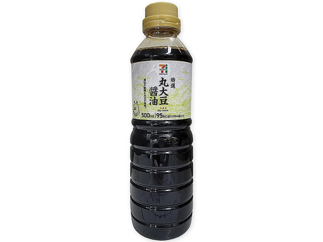
醤油
丸大豆醤油か濃口醤油500ml（200円程度）
丸大豆醤油か濃口醤油500ml（200円程度）
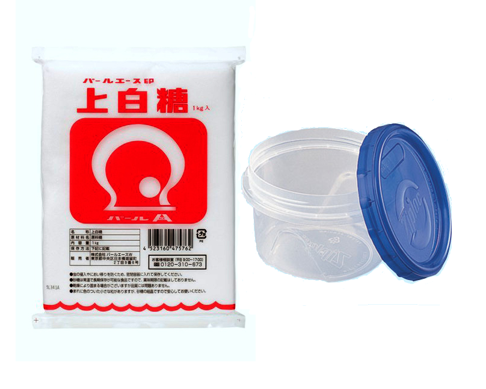
砂糖
1ｋｇ（250円程度）ジップロックコンテナスクリュー等
1ｋｇ（250円程度）ジップロックコンテナスクリュー等

サラダ油
サラダ油かキャノーラ油（1000ml 300円程度）
サラダ油かキャノーラ油（1000ml 300円程度）
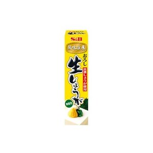
チューブしょうが
チューブ（40ｇ）100円前後
チューブ（40ｇ）100円前後
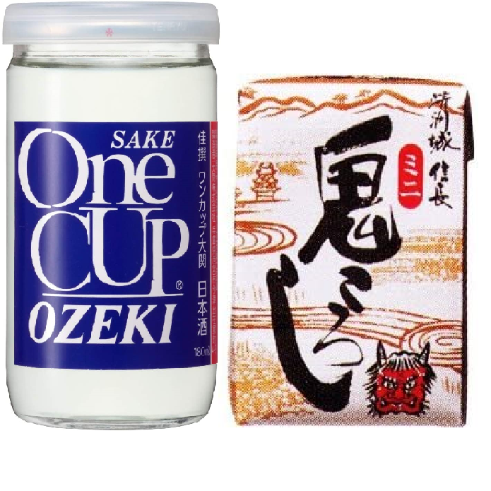
酒（日本酒）
180ml前後の量 200円程度
180ml前後の量 200円程度
食材
.png)
豚肉薄切り（または豚肉こま切れ）
豚肉は薄切り200ｇで300円程度、こま切れなら200ｇ250円程度
（コンビニで生鮮パックや冷凍で買う場合は少し金額が上がります）
千切りキャベツパックとマヨネーズ（好みで）
100円前後
豚肉は薄切り200ｇで300円程度、こま切れなら200ｇ250円程度
（コンビニで生鮮パックや冷凍で買う場合は少し金額が上がります）
千切りキャベツパックとマヨネーズ（好みで）
100円前後
下ごしらえ・調理
合わせ調味料を合わせて15分お肉を漬けます
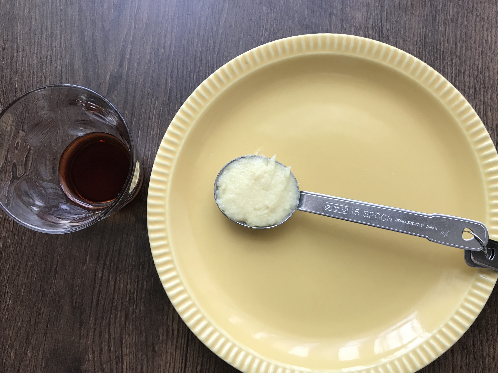
- 醤油：大さじ1
- 砂糖：大さじ1
- 酒：大さじ1
- チューブ生姜：大さじ1
- お皿やボウル、コップの中で合わせ調味料をすべて混ぜる。
- お皿の中で、お肉に混ぜた合わせ調味料をつける。
- お肉の全体に合わせ調味料いきわたるように入れ物の中でお肉を上下にかえしたり、くっついているお肉同士をはがして混ぜる。
- 15分くらいつけておきます。
フライパンを中火にかけてお肉を焼く

- フライパン
- サラダ油：大さじ1
- キッチンペーパー濡らし拭き掃除用に置く。
- フライパンにサラダ油大さじ1入れを中火にかける。（ガスは写真を参考に中火に、ＩＨは１８０℃に設定。）
- フライパンが温まったら（火をつけて1分程度）お肉を投入し、お肉を焼く。
- 全体に焼き色がついたら火をとめる。（写真を参照）
- 暖かいうちに飛び跳ねた油や汁等を拭く。
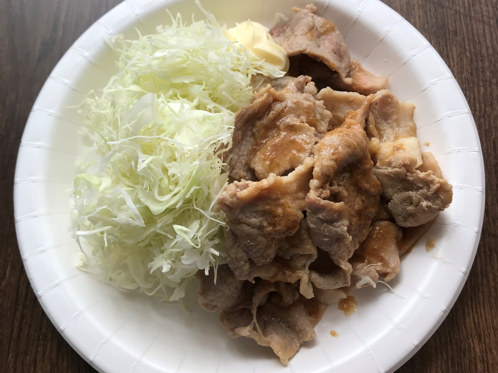
お皿に千切りキャベツを盛り付け、焼きあがったお肉を寄り添わせるように盛る。キャベツにマヨネーズ（分量外）を添えて、完成です！